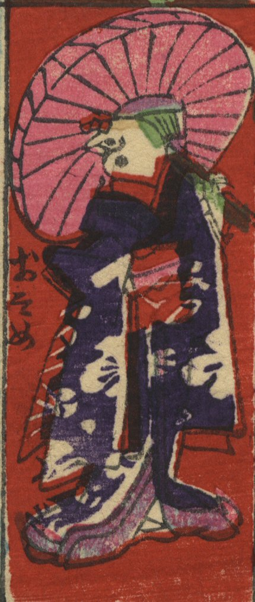

浄瑠璃「新版歌祭文 (しんぱんうたざいもん) 」、歌舞伎狂言「お染久松色読販 (うきなのよみうり) 」などに登場する「お染」に扮した雀。着物を着て、傘をさしている。
著作者：よし藤／出典：親書誌：U426_nichibunken_0400：しん板おとりおさらい雀；シンパン オトリ オサライ スズメ／日付：2015／資源識別子：U426_nichibunken_0400_0001_0027
Copyright (c)2010- International Research Center for Japanese Studies, Kyoto, Japan. All rights reserved.